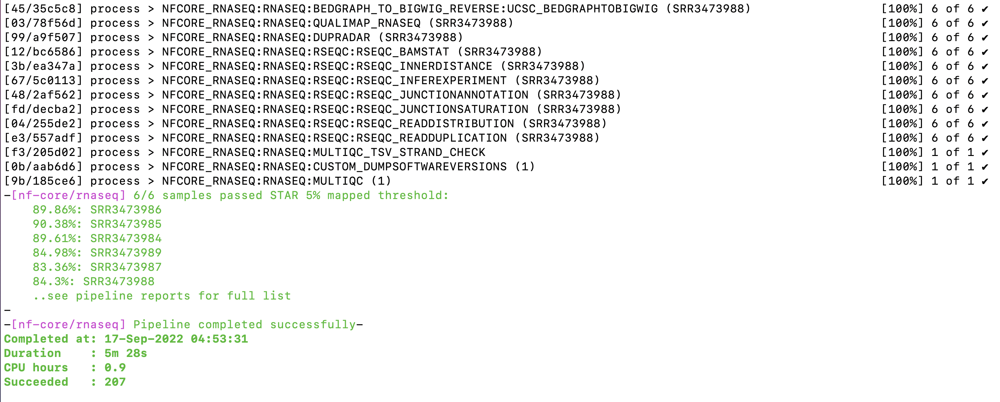

nf-core/rnaseq results folder
Questions
- How are the results from the nf-core/rnaseq organised?
- How to transfer the results from Pawsey Nimbus for interpretation?
Objectives
- Check if the nf-core/rnaseq command has run to completion
- Understand the structure of the results folder
- Transfer the required files from the results folder on Paqsey Nimbus to your local machine
Check if the nf-core/rnaseq command has completed
Please check the terminal windows to see if your nfcore command has completed running without any erros.
You should see a screen similar to one shown below.
The results of a completed run are stored in a folder
resultswith sub-folders created for individual processes.
The results folder
Type the command
ls -lh resultsto list the contents of the results folder.
drwxrwxr-x 2 ubuntu ubuntu 4096 Jul 26 06:53 pipeline_info
drwxrwxr-x 19 ubuntu ubuntu 4096 Jul 26 06:53 star_salmon
drwxrwxr-x 3 ubuntu ubuntu 4096 Jul 26 06:44 trimgalore
drwxrwxr-x 2 ubuntu ubuntu 4096 Jul 26 06:43 fastqc
drwxrwxr-x 3 ubuntu ubuntu 4096 Jul 25 20:51 multiqcCopy the results folder from Pawsey Nimbus to local machine
- On your local machine, open a terminal.
- Navigate to the path of your choice using the command
cdtochange the directory. - Use the following command for transferring the “results” folder from Pawsey Nimbus to this local path.
scp -r `login_name`@###.###.###.###:~/base_directory/working_directory/results ./- We can now use local browsers and other software tools such as
chrometo open the html (and other) log files for further analysis. - Next, we will try and uderstand the
resultsgenerated by thenf-core/rnaseqpipeline with context to a a typical differential expression (DE) analysis pipeline.
Key points
- The nf-core/rnaseq pipeline generates independant sub-folders in the main
resultsfolder for individual processes. - The results can be transferred to the local machine and the files can be used for further analysis.
All materials copyright Sydney Informatics Hub, University of Sydney